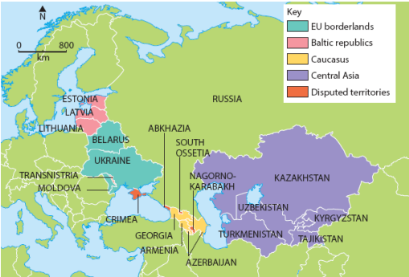
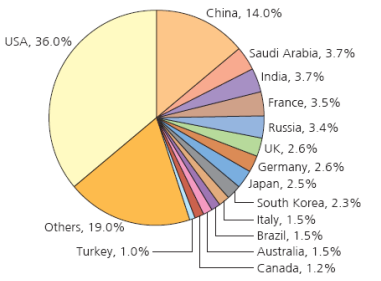
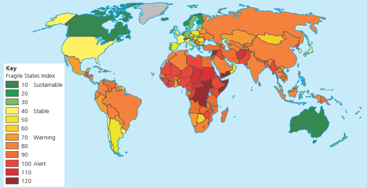

Sovereignty, territorial integrity, state power and global governance

The breakup of the USSR shows how quickly the political map can change when sovereignty is redistributed.
An independent country with defined territory, a permanent population, recognised government, sovereignty and the ability to form relations with other states.
A large group of people united by shared identity, culture, history, descent, language or traditions. A nation does not automatically have sovereign power.
The authority of a state to govern its land, people, resources, sea space and air space without outside control.
The principle that a state's recognised territory should be respected and not broken, invaded or infringed.
| Term | Exam shortcut | Example from the topic |
|---|---|---|
| State | Political unit with borders and government. | South Sudan became a sovereign state in 2011. |
| Nation | People with shared identity. | Kurds are a nation spread across several states. |
| Nation-state | State and nation mostly overlap. | Japan and France are used as examples. |
| Norms | Accepted rules of behaviour. | The UN Charter protects sovereign equality and territorial integrity. |
State power comes from the combined strength of the state apparatus, economy, resources, population and international influence.

Military expenditure is one way to compare hard power between states.

Fragility rises when state security, services, rights and resilience are weak.
The Westphalian model says each state has equal sovereignty and protected borders. In reality, pressure can come from inside the state, across borders or from global institutions.
States dispute land or islands, such as Crimea, the Falklands, or islands in the South and East China Seas.
National groups demand self-determination or independence, such as Basque, Catalan, Scottish or Tuareg movements.
Powerful companies can influence jobs, wages, labour rights, investment and environmental decisions inside host states.
Members keep sovereignty but accept shared rules from bodies such as the EU, UN, WTO, NATO or ASEAN.
Political boundaries may cut across ethnic homelands, fuelling conflict or claims for a new state.
States dispute sea-bed resources, oil, gas, fishing rights and strategic routes.
Intervention may protect citizens from genocide, war crimes, ethnic cleansing or crimes against humanity. But it can also be controversial because outside actors enter a state's territory and may undermine the principle that states control their own internal affairs.
Global governance provides a framework for responding when sovereignty or territorial integrity is threatened. It works through laws, treaties, diplomacy, sanctions, peacekeeping and humanitarian assistance.
| Short-term aims | Longer-term aims |
|---|---|
| Food, water, shelter, medicine, protection of civilians and ceasefire monitoring. | Rule of law, elections, human rights, infrastructure, food security and restored state authority. |